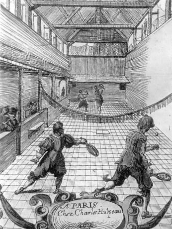
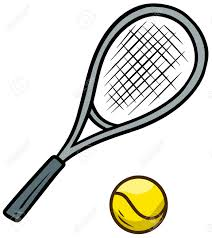
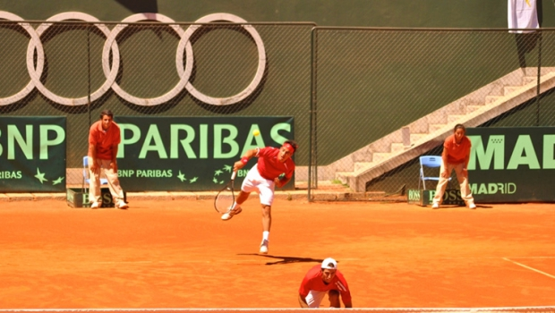
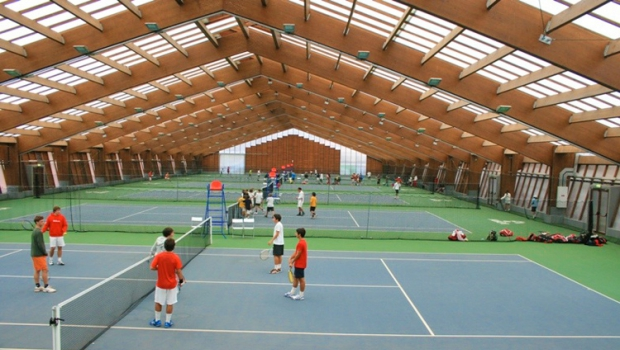
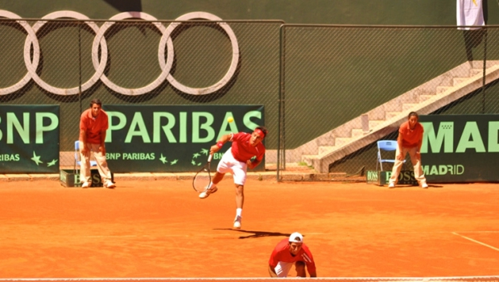
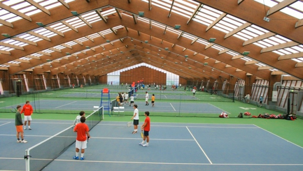

Bem-vindo ao Ténis Play, o teu parceiro do Desporto
Aqui vais ter informações sobre o Ténis, locais onde praticar, treinadores disponíveis, agenda de jogos atualizada e informações gerais para aprederes de forma autónoma a jogar.
História
O Ténis tem mais de 26 milhões de praticantes nos vários países da Europa. Em Portugal, é um dos desportos mais apreciados (depois do futebol). Inspirado num jogo francês antigo, do século XII o "jogo de palma", era praticado por monges, atiravam a bola de couro com as mãos contra as paredes dos mosteiro. Mais tarde evoluiu para o uso das raquetes.
© pt.wikipedia.org
Objetivo
Passar a bola por cima da rede, que divide o campo em metade, colocando-a no campo do adversário para criar dificuldades na sua devolução, levando à conquista de um ponto.
Campo de jogo

© studocu.com
Material
©pt.123rf.com
Jogadores
Singulares (2 Jogadores)
Pares (4 Jogadores)
Sistema de pontos
A pontuação começa no 0 chamado de "love", seguido de 15, 30, 40. Se ambos chegarem a 40-40, chama-se "deuce", e um jogador precisa de marcar dois pontos consecutivos para ganhar o jogo.
Benefícios do Ténis
Reduz o sedentarismo, e torna o sistema neuromuscular mais saudável
Melhora a capacidade de resolver problemas do dia-a-dia
Uma hora de ténis pode queimar até 870 calorias
Mais serviços no campo, menos horas no sofá
E agora onde treinar?
Experimentar ou praticar um novo desporto não tem de ser uma dor de cabeça
O Pólo de St. Amaro, onde o Clube nasceu, engloba dois campos de Ténis de pó de tijolo, uma parede bate-bolas e um edifício de apoio onde, balneários (M/F) e Gabinete de Fisioterapia.
2 Campos Ténis de Terra Batida
+
1 Parede bate-bolas
O CETO localiza-se:
R. José Diogo da Silva, 2780-337 Oeiras
Horários:Dias úteis: 9h às 22h, Sábados: 9h às 20h, Domingos: 9h às 13h
Website: jcstennisacademy.pt
Nº de telefone:910393014
Preçario alugar campos:Todos os dias:
Sócios- Singulares 3.00€ Pares 3.00€
Não Sócios- Singulares 6.00€ Pares 6.00€
Fim de semanas e feriadosSócios- Singulares 3.50€ Pares 3.50€
Não Sócios- Singulares 7.00€ Pares 7.00€
EXTRAS:Taxa de luz-6.00€p/hora
©https://www.ceto.com.pt/
©https://www.aircourts.com/
©https://www.tietennis.com/
Rodeado de uma paisagem verdejante e amena, o Clube de Campo Quinta da Moura tem 3 campos de ténis de piso rápido, 1 de relva sintética, 2 campos de padel, club house, snackbar, esplanada, salão social, proshop e espaços de lazer, o que faz deste o local indicado para si e para a sua família.
3 Campos Ténis de piso rápido
+
1 Campo de relva sintética
O Clube de Campo Quinta da Moura localiza-se:
R. Q.ta da Moura 1, 2730-205
Horários:Todos os dias das 8h às 23h
Website: quintadamoura.com
Nº de telefone:210129577
Preçario alugar campos:Para mais informações consulte o Website tietennis.com
©https://www.tietennis.com/ccquintadamoura
O Centro de Ténis Nova Morada está situado em Paço de Arcos no concelho de Oeiras e é gerido pela Força Ascendente, empresa especialista na formação, treino e acompanhamento de jogadores de ténis.
3 Campos de relva sintética com ilumominação
+
1 Campo de mini-ténis com parede bate-bolas
O Ténis Nova Morada localiza-se:
Av. Fundadores 26, 2770-072 Paço de Arcos
Horários:Dias úteis: 9h às 23h, Sábados: 9h às 19h, Domingos: 9h às 13h
Website: tenisnovamorada.com
Nº de telefone:910338480
Preçario alugar campos:Envie e-mail para tietennis.com
©https://www.tenisnovamorada.com/
 



O Clube de Ténis do Jamor tem como principal missão promover e enquadrar a prática da modalidade, por técnicos especializados e devidamente acreditados pela Federação Portuguesa de Ténis (FPT) oferecendo aos utentes classes dirigidas a vários escalões etários e diferentes níveis de ensino
1 Campo Central, em pó-de-tijolo
+
26 Campos Descobertos em pó-de-tijolo
+
3 Campos descobertos em betão poroso
+
6 Campos Cobertos em piso sintético
+
3 Paredes "bate-bolas" em piso sintético
O Clube de Ténis do Jamor localiza-se:
Complexo de Ténis do Estádio Nacional Dafundo
Horários:Dias úteis: 8h às 22h, Fins de semana: 8h às 20h
Nº de telefone:214193054
Website: jamor.ipdj.pt
Nº de telefone:214193054
Preçario alugar campos: Todos os dias:Federados- Campos descobertos 3.00€ Campos cobertos 4.50€ Campo central 7.50€
Não Federados- Campos descobertos 4.00€ Campos cobertos 5.50€ Campo central 10.00€
EXTRAS:Taxa de luz-5.00€p/hora
©https://jamor.ipdj.pt/
©https://www.tietennis.com/